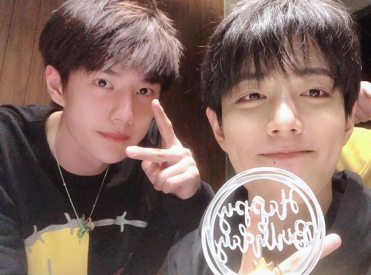

并肩于雪山之巅
“博君一肖”是由王一博和肖战组成的一对备受瞩目的 CP。
“博君一肖”的含义
这个 CP 名结合了王一博和肖战的名字，代表着粉丝们对他们之间深厚情谊和默契的喜爱与期待。粉丝们从他们的互动、合作中感受到了一种特别的魅力，“博君一肖”也成为了粉丝们表达对他们支持和热爱的象征。
代表作
- 电视剧《陈情令》，王一博饰演蓝忘机，肖战饰演魏无羡。这部剧以其精彩的剧情、精美的制作和演员们出色的表演，赢得了广泛的赞誉和高人气。
粉丝们的热爱
- “博君一肖”的粉丝们积极参与各种应援活动，为他们的偶像加油助威。
- 粉丝们通过创作同人作品、制作视频等方式，表达对他们的喜爱和支持。
他们的影响力
- 在娱乐圈
- 王一博和肖战凭借着出色的表现和高人气，在娱乐圈中拥有着广泛的影响力。他们的作品受到了众多观众的喜爱，也吸引了更多人关注中国影视行业的发展。
- 在社会上
- 他们的正能量形象和努力奋斗的精神，也激励着粉丝们在生活中积极向上，追求自己的梦想。
